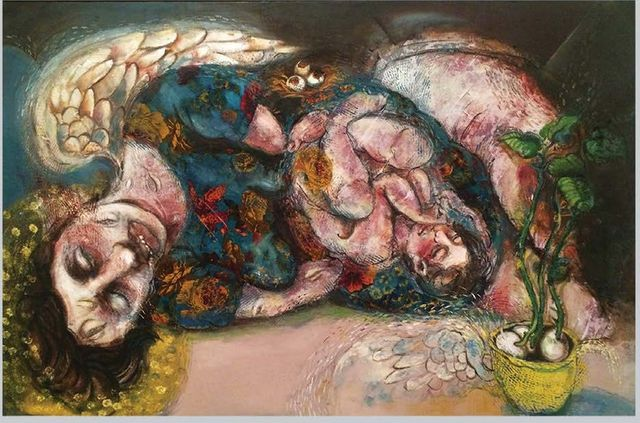
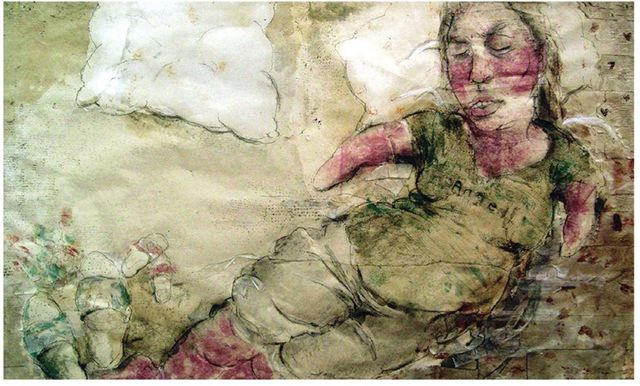
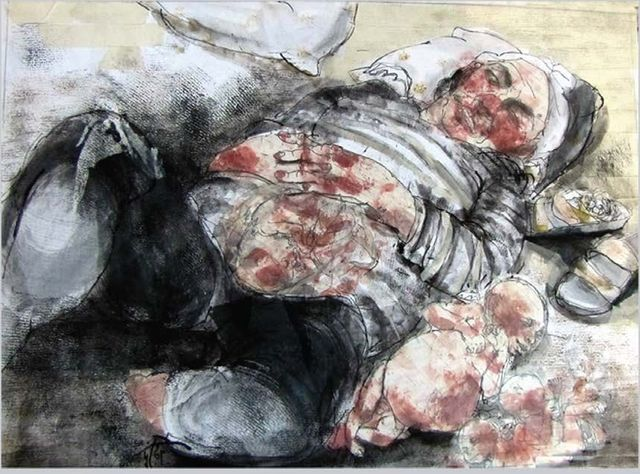
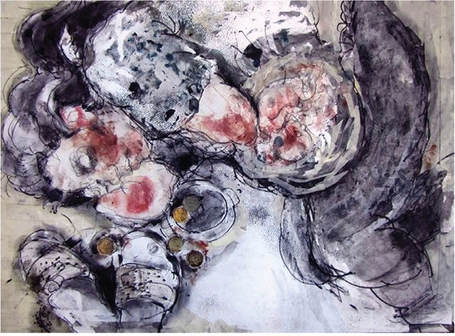
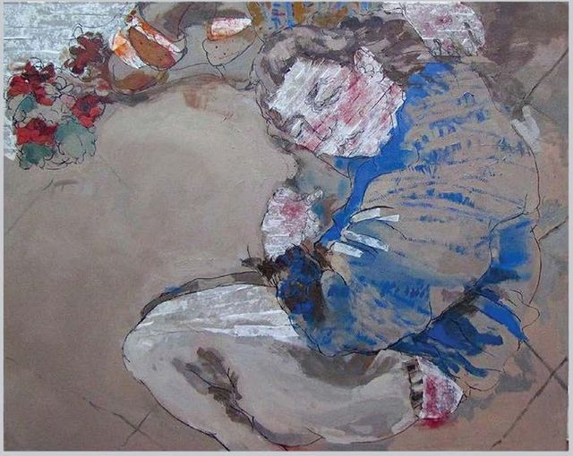
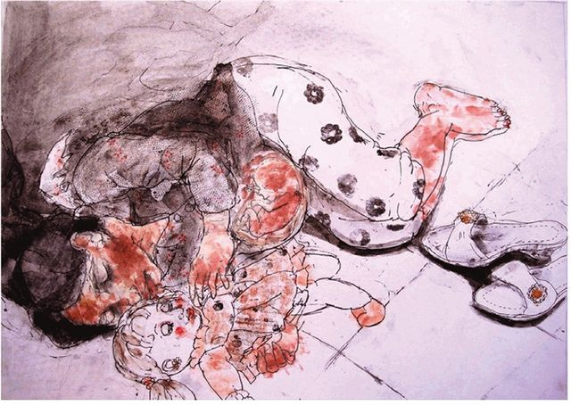
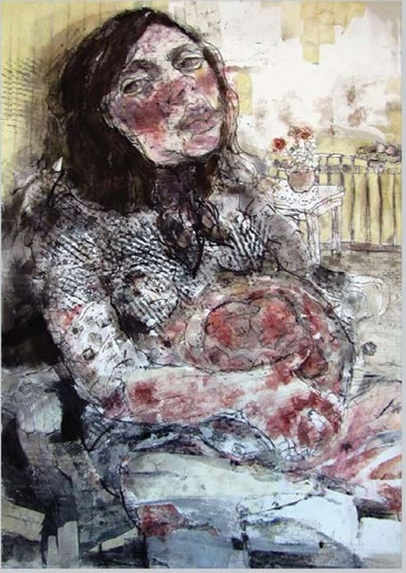

StatementAbout the work
Original formula for creating the world is formula of conflict and the world is nothing but a collection of opposites.
In these works we have attempted to depict variability of the material in the world and the emergence of evolution. And in parallel with it breaking common believes and thoughts of individuals in the community.
If no contradict was available never diversity and evolution happened. And the world did not play new role any time and no new designs will appear on the page of Universe. We always look at the world that conflicts are created from each other: beauty from ugliness, justice from injustice, awakening from sleep and sleep from waking, the robustness from disability and vice versa. Everything will be created from its opposite. And life and death and destruction are also subject to this general rule. And for this reason another life should arise from the death. Otherwise, the general rule of the nature will be violated.
((Angel of death with spread wings and thousands of eyes dives in death and it is the beginning of life))
Works7 artworks














History of experienceBiography · education · exhibitions · awards
Education
- BA in painting, Art and Architecture university|Tehran – Iran
- Degree in the field of Instructing from Tehran Municipality's Art and Cultural Organization
Solo exhibition
- 2007Artists house, Mirmiran gallery|Tehran – Iran
Group exhibition
- 2003"Our Iran" Festival|Urmia
- 2005The first annual contemporary design of Karaj|Tehran – Iran
- 2006Fourth International painting Biennial of the Islamic World
- 2006Third experimental festival for Youth Art's visual arts festival Museum of Contemporary Art
- 2006Painting and drawing exhibition, Asar Gallery|Tehran – Iran
- 2007The first annual of Doctor Sandozi for Designing
- 2007Homa gallery's "Nasl e no" selected department|Tehran – Iran
- 2008Damonfar visual arts exhibition, Niavaran museum|Tehran – Iran
- 2008Selected in city visual arts festival, Museum of Imam Ali|Tehran – Iran
- 2008Zanbagh gallery's, Girls cultural center
- 2008The third Homa gallery's "Nasl e no" selected department|Tehran – Iran
- 2010National festival of Iranian youth (Youth Visual Arts)
- 2009The second festival of Iranian contemporary design, the Museum of Imam Ali (AS)|Tehran – Iran
- 2015Sobhan gallery|Tehran – Iran
- And participating in several group exhibitions in the field of art and Khial gallery and so on from 2011 to 2014
Art activities
- Selected in city festival in the field of Painting and receiving statuette and plaque and cash prize
- Activity in the field of painting, drawing and illustration
- Illustrator of the book "exploration in the space", Sadegh Nia publication
- History in the field of teaching drawing and painting at the cultural center and municipality
Source: the Sobhan Gallery artist catalogue “Mojgan Najafi.pdf”.